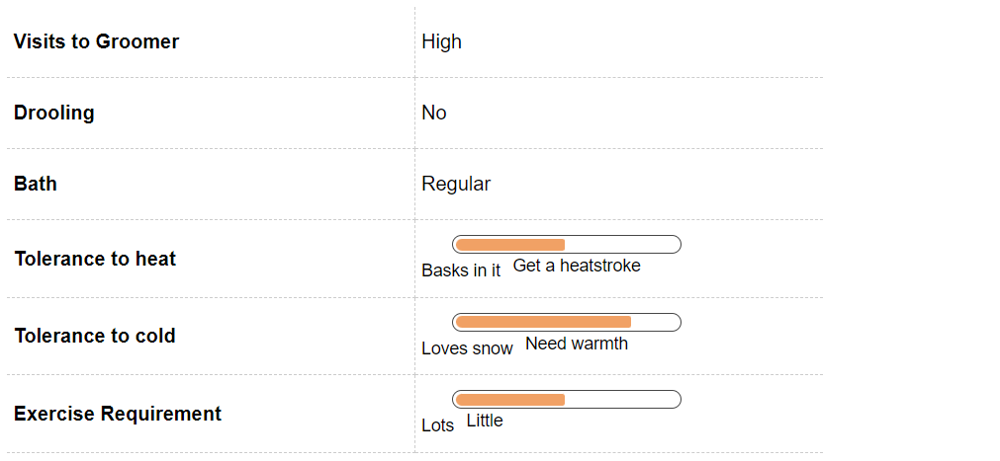
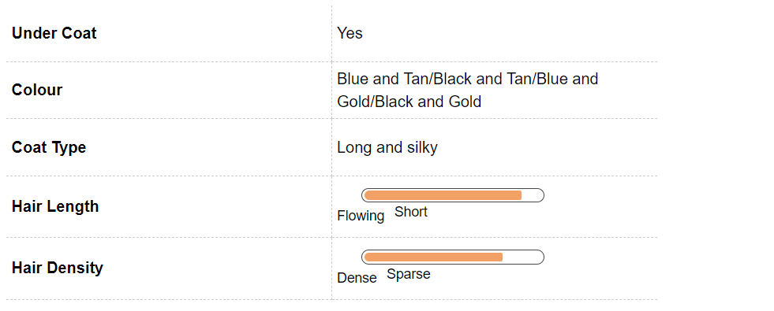
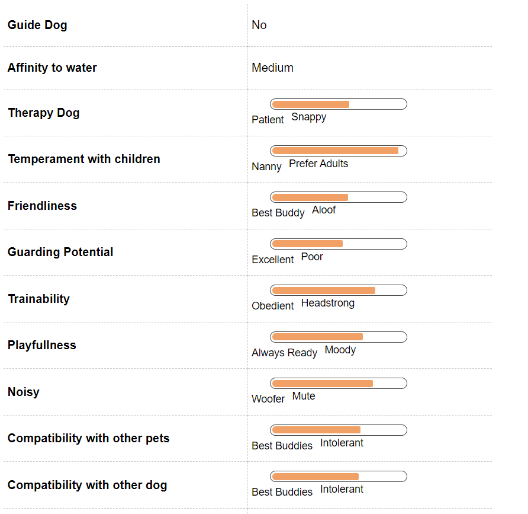
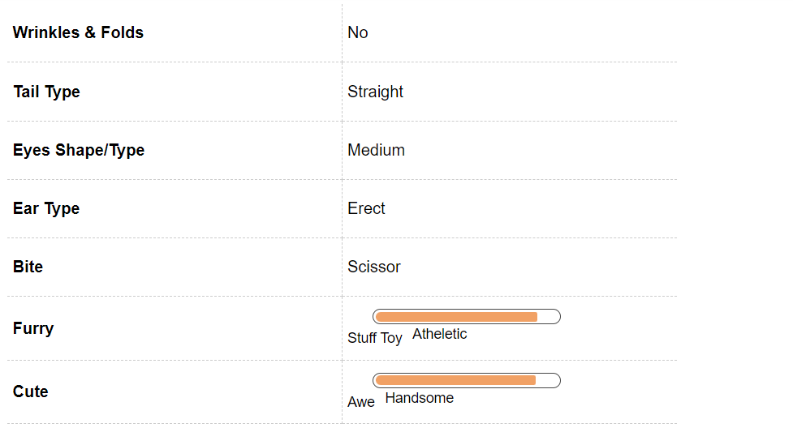

Yorkshire Terrier Dog Breed Information
Introduction
Fondly known as the Yorkie, the Yorkshire Terrier is the most popular toy breed in the US. With their affectionate, playful nature, small size, big personality and beautiful coat, there is really little doubt why they are so popular. Yorkies are tiny dogs and fit right into apartment life. While they get along well with adults, children and animals alike, Yorkies have small-dog syndrome and pack a punch. With the courage of a terrier, and the heart of a lion, this intelligent breed is truly the large dog in a small body.
History
The Yorkshire Terrier like the most other Terrier breeds originated in England. It is believed that their ancestors came to England in the mid-19th century from Scotland. These dogs were brought by the miners and weavers who came to Yorkshire. A Yorkie’s primary job was to catch rats in the mills. The breed was developed by crossing the now-extinct breeds of Clydesdale and Paisley Terriers with the Skye and Airedale Terriers. Today, Yorkies no longer hunt rats for a living; instead the live quite contentedly in doting households across the world, serving as companion dogs.
Unique Aspects
Yorkies are known to be difficult to house train. Start them young and crate train them, to begin with. They don’t like the cold and are prone to chills in damp places. They are definitely not an outdoors-only dog, being extremely content in the company of their human family.
Because of their small size and delicate bodies, Yorkies are not recommended for households with small children or toddlers, who might inadvertently harm this little dog. They are also known to be ‘yappy’ dogs, so early training in bark inhibition is highly recommended. They have delicate digestive systems and are known to be picky eaters. Yorkies have another trait common to tiny dogs: the small dog syndrome. They are fearless and have little problem taking on adversaries – real or imagined – several times their size.
Fun Trivia

The lustrous Yorkshire Terrier has been a part of many movies, including Funny Face, Meet the Fockers, Urban Legend, and A Fish Called Wanda. The list of celebrities that have been smitten by this feisty and adorable breed is quiet an exhaustive one. President Richard Nixon, Paris Hilton, Naomi Watts, Whitney Houston, and Molly Sims have all fallen prey to the Yorkie’s charms.
Vital Stats:
Dog Breed Group:
Toy Dogs
Height:
8-9 Inches
Weight:
3-4 Kg
Life Span:
9 to 10 years
Pros and Cons
| Pros |
Cons |
|
Guaranteed to turn heads with their beauty |
Grooming requires a lot of time and effort |
|
Perfect apartment dogs and family dogs |
Not the best dog to have around small children |
|
Quiet intelligent and can be easily trained |
Do not fare well in extremely cold weather
|
Yorkshire Terrier Maintenance & Effort

Grooming
Be prepared for a lifetime of laborious grooming with your Yorkie. These are high-maintenance dogs with luxurious coats that need a lot of upkeep. Several families resort to keeping the coat on their Yorkies short, to facilitate easier grooming. Maintenance is the order of the day, with daily brushing and de-tangling. For a coat of even length, it’s best to prepare yourself for fat professional grooming bills.
Use a wire pin brush and a stainless steel coat to remove excess hair and keep the coat tangle-free. A Yorkie with dreadlocks is a receptacle for parasites like ticks and fleas. Bathe your Yorkie once a week and use a spray-on conditioner whilst grooming. Because of the amount of time you will spend grooming, acclimatise your Yorkie from a young age to being handled and brushed all over.
Yorkshire Terrier Hair & Coat

Yorkshire Terrier Health & Care
Common Health Issues
Yorkies are generally healthy dogs, but like all breeds, they come with their share of both generic and genetic conditions. Top of this list is Patellar Luxation, a common condition amongst small breeds. In this condition, the kneecap is dislocated and can move inwards and outwards in both directions. In severe cases, this condition can be removed with surgery.
Yorkies are also prone to progressive retinal atrophy, a degenerative disease of the retinal visual cells that ultimately ends in blindness. Another common problem seen in this breed is Portosystemic shunt (PSS), which is an abnormal flow of blood between the liver and the body. Signs can include lack of appetite, hypoglycemia (low blood sugar), intermittent gastrointestinal issues, urinary tract problems, drug intolerance, and stunted growth. These signs usually appear in the first two years of a Yorkie’s life and the condition can be cured with corrective surgery and special diets.
In addition to this, Yorkies are prone to various teeth and gum problems that at times can result in difficulty in chewing food. They can have early tooth decay as well, so it is important to ensure that the oral hygiene of this breed is maintained at all times.
Yorkshire Terrier Behavior

Temperament
The Yorkie is a very intelligent and feisty toy dog, always eager to seek adventure. Like most terriers, they have a high energy level and are known for their bravery. They are wonderful companions to their family members but it may not be a great idea to live with this breed, if you have small children in the house. The Yorkshire Terrier is known to be yappy and can at times snap at young children if they are irritated. This breed will be best suited for families with older children and adults.
Yorkies can be wary of strangers, so early socialisation can help get them used to meeting and greeting your friends. They are fiercely loyal to their owners and can be extremely protective of them at times. These dogs are also known for their high levels of intelligence and trainability. They love to please their humans and training them can be delightful!
Environment
Yorkies are perfect dogs for apartment living. They are an active breed, but don’t necessarily need a large yard to work off their energy. A brisk walk in the park or a half hour of playtime will suffice. Yorkies are quite sensitive to cold and don’t do well in very cold climates. They thrive in warmer places, and do well to stay indoors more than they do outdoors. While they are yappy and will alert you to any unusual sounds and intruders, their small size doesn’t make them great guard dogs or watchdogs. Yorkies are big on love and companionship and will not do well as outdoor dogs at all.
Training & Intelligence
Yorkies are extremely intelligent dogs and respond very well to training, especially if positive reinforcement methods are used. They are keen to please their family, curious and sharp: all great traits to have in a quick learner. That said, their terrier spirit makes them a little stubborn but do not be disheartened; they are still a delight to train. The easiest way is to begin training is as early as possible and all sessions should start with praise and treats. This breed will fare well if you can design creative sessions for them.
Yorkies can be protective about their families and it is very important to socialize them early to avoid any unpleasant situations later. These dogs do well with older children but might not be the best pet for small kids, as they can be snappy and impatient. If you like a quiet life, be sure to teach your Yorkie bark inhibition at an early age.
Yorkshire Terrier Breeding
Procreation
Yorkies are generally a healthy breed and their breeding does not have many complications. Average male and female Yorkies attain sexual maturity anywhere between six to nine months of age, although they are still too young to breed at this age. This breed, like most other small breeds, is likely to require a C-section at the time of giving birth, so make sure you have a good vet handy.
Yorkies take around 18 months to reach their full height and structure. It is advisable to breed your dog after at least two years of age. If you are first-timer at breeding, then taking a vet’s opinion is advisable. An average litter consists of 2-4 puppies.
Puppies
The Yorkshire puppy can be quite a handful, as they are high-spirited little dogs that were bred to chase rats out of mills and factories. Yorkies, when born, are mostly black in colour; differentiation starts when they grow a little older. Initially they have a tan and black flowing coat, which changes to tan and blue as they grow older. As the Yorkie ages, the coat colour tends to fade.
Your puppy at times can suffer from small dog syndrome; he or she might think of themselves as much bigger that their actual size. They fearlessly pick fights with dogs much bigger than themselves. Start socialising your Yorkie with several people and animals from an early age, to minimise their suspicious nature, growing up.
Yorkshire Terrier Appearance

Body
With their beautiful coats and large personalities, Yorkies are often the centre of attention and have grown to love it. The body of a Yorkie is compact and proportionate, with a level back. The head is small and flat with a muzzle that is of moderate length. The coat is long, silky, and fine – much like human hair. The coat is steel blue or black in colour on the body and tail, and tan in other places.
The legs of the Yorkie are straight and covered with hair. The feet are round with black nails. The tail used to be docked at medium length, but this is no longer required to be done for these companion animals. It is covered with hair and is carried a little higher than the level of the back. The nose is mostly black in colour and the ears are V-shaped and small. They are set high but are not too apart and are erect on the head. The eyes are medium shaped and dark. The average lifespan of a Yorkie is 12-15 years.
Yorkies are generally between 8 and 9 inches tall and weigh no more than 7 pounds, with an average of 4 to 6 pounds. They are inconsistent in size and a single litter can often contain Yorkies ranging from 4 pounds to 15 pounds. Beware of breeders who market “teacup” Yorkies. Dogs who are smaller than their average size are usually prone to genetic disorders and are at a higher health risk than others.